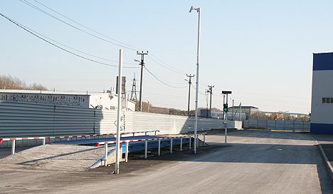

Полезно
Взвешивание автомобилей необходимо:
- при учетных и технологических операциях на промышленных, сельскохозяйственных и торговых предприятиях;
- для ведения расчетов между организациями, перевозящими сырье и материалы автомобильным транспортом;
- для внутреннего контроля на предприятиях;
- для оценки нагрузки на автострады.

Взвешивание авто
ООО «Тримет» предлагает новую услугу – взвешивание грузового автотранспорта.
Взвешивание автотранспорта осуществляется с помощью автомобильных весов М8200А. Весы предназначены для статистического взвешивания автомобилей массой до 60т и длиной до 18м.

Автомобильные весы ООО «Тримет» позволяют определять массу пустого и груженого автомобиля с точностью измерения до 20 кг. Взвешивание автомобиля занимает 5-10 мин., по результатам выдается Акт взвешивания автомобиля.
ООО «Тримет» осуществляет ежегодную государственную поверку весов (Свидетельство о поверке). Автомобильные весы установлены компанией «Уралточприбор».
| Периодичность взвешивания | до 2 раз в месяц | 3-4 раза в месяц | 4-5 раз в месяц | от 6 раз в месяц |
|---|---|---|---|---|
| Стоимость 1 взвешивания, руб. (вкл. НДС) | 500 | 450 | 420 | 400 |